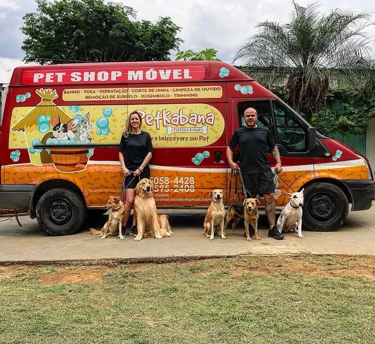
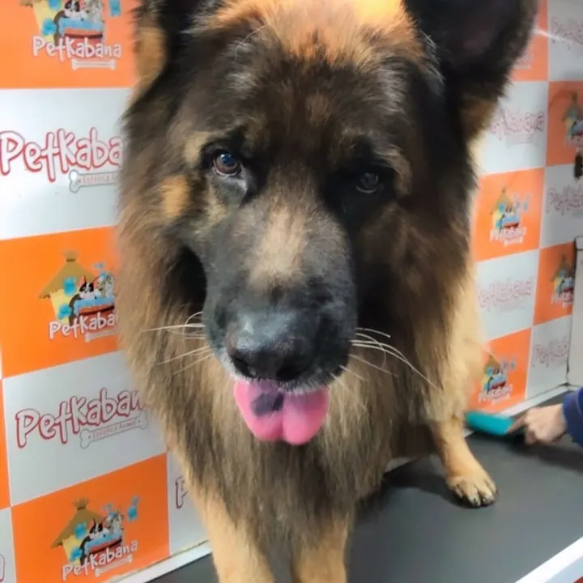
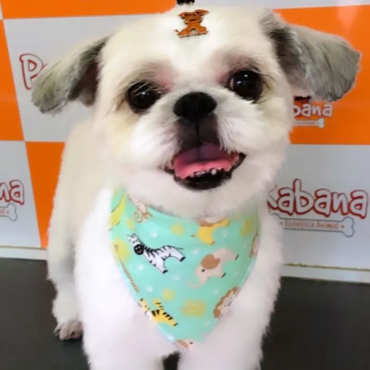

Pet shop móvel · Um banho de carinho! 🫧
Banho & Tosa na porta da sua casa
Atendimento com hora marcada, dentro da nossa van equipada. Seu pet limpinho, sem estresse e sem você sair de casa.
Atendemos Cotia e São Paulo · +7 anos de experiência 🧡
Por que escolher a Petkabana?
Banho e tosa sem tirar seu pet de casa: a gente estaciona na sua porta, cuida de tudo e devolve um pet limpinho e tranquilo.
Atendimento em domicílio
Vamos até a porta da sua residência, levando conforto e comodidade para você e seu pet.
Hora marcada
Você escolhe o melhor horário e economiza tempo. Nada de levar e buscar no pet shop.
Van equipada
Toda a estrutura de um pet shop dentro da nossa van, pronta para o banho e a tosa.
Menos estresse para o pet
Sem transporte, sem gaiolas e sem espera. Você pode acompanhar tudo ou deixar com a nossa equipe.
Mais de 7 anos de experiência
Anos cuidando de cães de todos os tamanhos, raças e jeitinhos.
Muito carinho
Atendimento personalizado: cada pet é tratado como se fosse da família.
Nossos serviços
Tudo o que seu pet precisa para ficar limpinho, cheiroso e lindo — sem sair de casa.
Banho
Banho caprichado, com secagem e escovação.
Tosa
Higiênica, na máquina ou na tesoura, do jeitinho que vocês preferem.
Hidratação
Pelos mais macios, brilhantes e fáceis de pentear.
Cauterização
Tratamento que ajuda a recuperar e proteger os fios.
Corte de unhas
Unhas aparadas com cuidado, para o pet andar com conforto.
Limpeza de ouvido
Higiene delicada das orelhinhas.
Remoção de subpelo
Retira o pelo morto, ótimo para a época da troca de pelos.
Desembolo
Desfazemos os nós com paciência e delicadeza.
Trimming
Técnica de acabamento para pelagens que pedem esse cuidado.
Laço e bandana
O toque final para seu pet sair ainda mais charmoso.
Hospedagem
Valores sob consulta pelo WhatsApp.
Como funciona
Agende pelo WhatsApp
Conte pra gente sobre seu pet e escolha o melhor dia e horário.
A van chega no horário marcado
Estacionamos na porta da sua casa e o atendimento acontece ali mesmo.
Seu pet volta cheiroso e feliz
Limpinho, bem cuidado e sem o estresse do transporte. 🐶
O que precisamos no local
- Espaço para a van: estacionamento, garagem ou pátio.
- Ponto de energia 220V, ligado ao nosso veículo durante o atendimento.
- Sem 220V? Sem problema: temos gerador de energia próprio.
Nosso pet shop móvel
Um novo conceito em banho e tosa: equipamentos e produtos de primeira linha, profissionais treinados e toda a estrutura necessária, na porta da sua residência.


Hospedagem
Vai viajar ou precisa de alguém de confiança para cuidar do seu pet por alguns dias? A Petkabana também oferece hospedagem, com o mesmo carinho de sempre.
Chame a gente no WhatsApp para saber como funciona e consultar as datas disponíveis.
Consultar hospedagemOnde atendemos
Cotia
Atendimento em residências e condomínios de Cotia, incluindo a Granja Viana.
São Paulo
Condomínios
Na dúvida, nos envie seu endereço pelo WhatsApp para avaliarmos a viabilidade. 😉
Quem somos
A Petkabana nasceu do amor pelos animais e da vontade de cuidar deles de um jeito mais leve. Há mais de 7 anos levamos banho e tosa até a porta dos nossos clientes, poupando os pets do estresse do transporte e da espera no pet shop.
Cada atendimento é personalizado: você pode acompanhar de pertinho ou deixar seu pet aos cuidados da nossa equipe especializada. E, como gostamos de dizer, quem trabalha com esses bichinhos sabe o apego que criamos. 🧡
Um banho de carinho!

O que dizem os tutores
- ★★★★★
— Elisabete S., avaliação no Google“A Petkabana tem um serviço excepcional! Além do cuidado com os nossos pets eles têm um carinho todo especial e ainda oferecem o atendimento no conforto de casa! Super recomendamos!”
- ★★★★★
— Bruno O., avaliação no Google“Pontualidade, cuidado e carinho máximos com o pet! Utiliza produtos de qualidade, fazendo com que o resultado dure por mais tempo.”
- ★★★★★
— Camila R., avaliação no Google“Sensacional o trabalho da PetKabana, o cuidado com a minha Mel e a tranquilidade de um ótimo atendimento e serviço prestado.”
Perguntas frequentes
Onde é feito o banho e a tosa?
Dentro da nossa van equipada, estacionada na porta da sua casa. Seu pet não precisa ser levado até um pet shop.
Preciso acompanhar o atendimento?
Você escolhe: pode acompanhar o atendimento do seu pet ou deixá-lo aos cuidados da nossa equipe especializada.
Vocês atendem no meu bairro?
Atendemos Cotia (incluindo a Granja Viana) e São Paulo (Interlagos, Butantã, Jardim Marajoara, Alto da Boa Vista, Campo Grande, Socorro e proximidades), além dos condomínios Spaces Madalena, Cond. Lapa e Spaces Berrini. Na dúvida, envie seu endereço pelo WhatsApp para avaliarmos a viabilidade.
Do que vocês precisam no local?
Apenas de um espaço adequado para a van, como estacionamento ou pátio, e de um ponto de energia 220V, que fica ligado ao nosso veículo durante o atendimento. Onde não há 220V, usamos nosso gerador de energia.
Quanto custa?
Os valores variam conforme o pet e os serviços escolhidos. Peça seu orçamento pelo WhatsApp.
Como faço para agendar?
É só chamar a gente no WhatsApp (11) 95058-4428 e escolher o melhor dia e horário. O atendimento é com hora marcada.
Agende o banho do seu pet hoje!
Fale com a gente pelo WhatsApp e escolha o melhor horário. A gente leva o carinho até você. 🫧
Agendar pelo WhatsApp